Last updated: 2018-10-14
workflowr checks: (Click a bullet for more information) ✖ R Markdown file: uncommitted changes
The R Markdown file has unstaged changes. To know which version of the R Markdown file created these results, you’ll want to first commit it to the Git repo. If you’re still working on the analysis, you can ignore this warning. When you’re finished, you can run wflow_publish to commit the R Markdown file and build the HTML.
✔ Environment: empty
Great job! The global environment was empty. Objects defined in the global environment can affect the analysis in your R Markdown file in unknown ways. For reproduciblity it’s best to always run the code in an empty environment.
✔ Seed:
set.seed(20180928)
The command set.seed(20180928) was run prior to running the code in the R Markdown file. Setting a seed ensures that any results that rely on randomness, e.g. subsampling or permutations, are reproducible.
✔ Session information: recorded
Great job! Recording the operating system, R version, and package versions is critical for reproducibility.
✔ Repository version: 257e6ab
wflow_publish or wflow_git_commit). workflowr only checks the R Markdown file, but you know if there are other scripts or data files that it depends on. Below is the status of the Git repository when the results were generated:
Ignored files:
Ignored: .Rhistory
Ignored: .Rproj.user/
Ignored: analysis/GBM_Analysis_cache/
Unstaged changes:
Modified: analysis/GBM_Analysis.Rmd
| File | Version | Author | Date | Message |
|---|---|---|---|---|
| Rmd | 257e6ab | melsiddieg | 2018-10-14 | new final version |
| html | 257e6ab | melsiddieg | 2018-10-14 | new final version |
| Rmd | 9d408d5 | melsiddieg | 2018-09-28 | testing remote |
| html | 91131de | melsiddieg | 2018-09-28 | Build site. |
| Rmd | 3d8fb5f | melsiddieg | 2018-09-28 | added signature analysis |
| html | 3d8fb5f | melsiddieg | 2018-09-28 | added signature analysis |
library(maftools)
library(data.table)
maf <- fread('/home/sieny/Gemini_Data/Brain/mskcc-vcf2maf-decbf60/Annoted_Mutect_brain6_final.maf')
clin <- fread('/home/sieny/Gemini_Data/Brain/cData.csv')
brn <- read.maf(maf,clin) ID N
1: Samples 29
2: 3'Flank 2259
3: 3'UTR 8461
4: 5'Flank 3523
5: 5'UTR 4151
6: IGR 619
7: Intron 97018
8: RNA 715
9: Silent 2836
10: Splice_Region 974
ID summary Mean Median
1: NCBI_Build GRCh37 NA NA
2: Center . NA NA
3: Samples 29 NA NA
4: nGenes 5115 NA NA
5: Frame_Shift_Del 75 2.586 2
6: Frame_Shift_Ins 77 2.655 1
7: In_Frame_Del 17 0.586 0
8: In_Frame_Ins 77 2.655 2
9: Missense_Mutation 8273 285.276 149
10: Nonsense_Mutation 740 25.517 10
11: Nonstop_Mutation 9 0.310 0
12: Splice_Site 220 7.586 3
13: Translation_Start_Site 18 0.621 0
14: total 9506 327.793 172
Hugo_Symbol Frame_Shift_Del Frame_Shift_Ins In_Frame_Del
1: CELSR2 0 0 0
2: TTN 0 1 0
3: LRP8 2 0 0
4: IGFN1 0 0 0
5: MACF1 1 0 0
---
5111: ZSCAN5C 0 0 0
5112: ZSWIM2 0 0 0
5113: ZSWIM6 0 0 0
5114: ZSWIM7 0 0 0
5115: ZWINT 0 0 0
In_Frame_Ins Missense_Mutation Nonsense_Mutation Nonstop_Mutation
1: 22 8 1 0
2: 0 59 7 0
3: 0 15 0 0
4: 0 20 1 0
5: 0 18 5 0
---
5111: 0 1 0 0
5112: 0 1 0 0
5113: 0 1 0 0
5114: 0 0 0 0
5115: 0 0 1 0
Splice_Site Translation_Start_Site total MutatedSamples
1: 0 0 31 22
2: 2 0 69 17
3: 0 0 17 16
4: 0 0 21 15
5: 0 0 24 13
---
5111: 0 0 1 1
5112: 0 0 1 1
5113: 0 0 1 1
5114: 1 0 1 1
5115: 0 0 1 1
AlteredSamples
1: 22
2: 17
3: 16
4: 15
5: 13
---
5111: 1
5112: 1
5113: 1
5114: 1
5115: 1
[1] "TTN" "MACF1" "HMCN1" "OBSCN" "NEB"
[1] "13" "c6"getSampleSummary(brn) Tumor_Sample_Barcode Frame_Shift_Del Frame_Shift_Ins In_Frame_Del
1: 24 0 36 0
2: 23 4 1 2
3: 20 3 2 1
4: 13 0 1 0
5: 30 6 5 1
6: 2 5 3 4
7: 27 16 12 1
8: 31 7 4 2
9: 1 4 1 1
10: 32 1 1 0
11: 10 4 1 0
12: 5 2 2 1
13: c6 3 1 1
14: 22 0 0 0
15: 14 2 0 0
16: 21 0 1 0
17: 17 1 0 0
18: 9 4 1 0
19: 4 1 2 1
20: 16 3 0 0
21: 18 1 0 0
22: 7 1 1 0
23: 25 1 0 0
24: 8 3 0 1
25: 12 0 2 0
26: 29 2 0 0
27: 28 0 0 0
28: 11 1 0 1
29: 6 0 0 0
Tumor_Sample_Barcode Frame_Shift_Del Frame_Shift_Ins In_Frame_Del
In_Frame_Ins Missense_Mutation Nonsense_Mutation Nonstop_Mutation
1: 2 1686 203 2
2: 5 1289 129 2
3: 8 962 81 0
4: 1 894 62 0
5: 5 436 31 1
6: 10 386 39 0
7: 2 269 16 0
8: 5 224 15 0
9: 2 175 10 0
10: 5 164 18 0
11: 3 169 12 1
12: 5 168 5 0
13: 2 165 7 1
14: 2 149 21 0
15: 2 156 9 0
16: 0 131 13 1
17: 1 110 17 0
18: 3 107 9 0
19: 4 102 6 1
20: 1 88 5 0
21: 0 80 10 0
22: 1 81 7 0
23: 2 67 3 0
24: 2 56 4 0
25: 2 54 3 0
26: 2 40 2 0
27: 0 32 3 0
28: 0 30 0 0
29: 0 3 0 0
In_Frame_Ins Missense_Mutation Nonsense_Mutation Nonstop_Mutation
Splice_Site Translation_Start_Site total
1: 62 2 1993
2: 43 3 1478
3: 26 2 1085
4: 22 5 985
5: 6 1 492
6: 5 1 453
7: 7 0 323
8: 3 0 260
9: 6 0 199
10: 4 0 193
11: 2 0 192
12: 7 0 190
13: 2 3 185
14: 5 0 177
15: 3 0 172
16: 0 0 146
17: 5 0 134
18: 3 0 127
19: 0 0 117
20: 0 0 97
21: 5 0 96
22: 1 0 92
23: 2 0 75
24: 0 1 67
25: 0 0 61
26: 1 0 47
27: 0 0 35
28: 0 0 32
29: 0 0 3
Splice_Site Translation_Start_Site totalgetGeneSummary(brn) Hugo_Symbol Frame_Shift_Del Frame_Shift_Ins In_Frame_Del
1: CELSR2 0 0 0
2: TTN 0 1 0
3: LRP8 2 0 0
4: IGFN1 0 0 0
5: MACF1 1 0 0
---
5111: ZSCAN5C 0 0 0
5112: ZSWIM2 0 0 0
5113: ZSWIM6 0 0 0
5114: ZSWIM7 0 0 0
5115: ZWINT 0 0 0
In_Frame_Ins Missense_Mutation Nonsense_Mutation Nonstop_Mutation
1: 22 8 1 0
2: 0 59 7 0
3: 0 15 0 0
4: 0 20 1 0
5: 0 18 5 0
---
5111: 0 1 0 0
5112: 0 1 0 0
5113: 0 1 0 0
5114: 0 0 0 0
5115: 0 0 1 0
Splice_Site Translation_Start_Site total MutatedSamples
1: 0 0 31 22
2: 2 0 69 17
3: 0 0 17 16
4: 0 0 21 15
5: 0 0 24 13
---
5111: 0 0 1 1
5112: 0 0 1 1
5113: 0 0 1 1
5114: 1 0 1 1
5115: 0 0 1 1
AlteredSamples
1: 22
2: 17
3: 16
4: 15
5: 13
---
5111: 1
5112: 1
5113: 1
5114: 1
5115: 1getFields(brn) [1] "Hugo_Symbol" "Entrez_Gene_Id"
[3] "Center" "NCBI_Build"
[5] "Chromosome" "Start_Position"
[7] "End_Position" "Strand"
[9] "Variant_Classification" "Variant_Type"
[11] "Reference_Allele" "Tumor_Seq_Allele1"
[13] "Tumor_Seq_Allele2" "dbSNP_RS"
[15] "dbSNP_Val_Status" "Tumor_Sample_Barcode"
[17] "Matched_Norm_Sample_Barcode" "Match_Norm_Seq_Allele1"
[19] "Match_Norm_Seq_Allele2" "Tumor_Validation_Allele1"
[21] "Tumor_Validation_Allele2" "Match_Norm_Validation_Allele1"
[23] "Match_Norm_Validation_Allele2" "Verification_Status"
[25] "Validation_Status" "Mutation_Status"
[27] "Sequencing_Phase" "Sequence_Source"
[29] "Validation_Method" "Score"
[31] "BAM_File" "Sequencer"
[33] "Tumor_Sample_UUID" "Matched_Norm_Sample_UUID"
[35] "HGVSc" "HGVSp"
[37] "HGVSp_Short" "Transcript_ID"
[39] "Exon_Number" "t_depth"
[41] "t_ref_count" "t_alt_count"
[43] "n_depth" "n_ref_count"
[45] "n_alt_count" "all_effects"
[47] "Allele" "Gene"
[49] "Feature" "Feature_type"
[51] "Consequence" "cDNA_position"
[53] "CDS_position" "Protein_position"
[55] "Amino_acids" "Codons"
[57] "Existing_variation" "ALLELE_NUM"
[59] "DISTANCE" "STRAND_VEP"
[61] "SYMBOL" "SYMBOL_SOURCE"
[63] "HGNC_ID" "BIOTYPE"
[65] "CANONICAL" "CCDS"
[67] "ENSP" "SWISSPROT"
[69] "TREMBL" "UNIPARC"
[71] "RefSeq" "SIFT"
[73] "PolyPhen" "EXON"
[75] "INTRON" "DOMAINS"
[77] "AF" "AFR_AF"
[79] "AMR_AF" "ASN_AF"
[81] "EAS_AF" "EUR_AF"
[83] "SAS_AF" "AA_AF"
[85] "EA_AF" "CLIN_SIG"
[87] "SOMATIC" "PUBMED"
[89] "MOTIF_NAME" "MOTIF_POS"
[91] "HIGH_INF_POS" "MOTIF_SCORE_CHANGE"
[93] "IMPACT" "PICK"
[95] "VARIANT_CLASS" "TSL"
[97] "HGVS_OFFSET" "PHENO"
[99] "MINIMISED" "ExAC_AF"
[101] "ExAC_AF_AFR" "ExAC_AF_AMR"
[103] "ExAC_AF_EAS" "ExAC_AF_FIN"
[105] "ExAC_AF_NFE" "ExAC_AF_OTH"
[107] "ExAC_AF_SAS" "GENE_PHENO"
[109] "FILTER" "flanking_bps"
[111] "variant_id" "variant_qual"
[113] "ExAC_AF_Adj" "ExAC_AC_AN_Adj"
[115] "ExAC_AC_AN" "ExAC_AC_AN_AFR"
[117] "ExAC_AC_AN_AMR" "ExAC_AC_AN_EAS"
[119] "ExAC_AC_AN_FIN" "ExAC_AC_AN_NFE"
[121] "ExAC_AC_AN_OTH" "ExAC_AC_AN_SAS"
[123] "ExAC_FILTER" "gnomAD_AF"
[125] "gnomAD_AFR_AF" "gnomAD_AMR_AF"
[127] "gnomAD_ASJ_AF" "gnomAD_EAS_AF"
[129] "gnomAD_FIN_AF" "gnomAD_NFE_AF"
[131] "gnomAD_OTH_AF" "gnomAD_SAS_AF" plotmafSummary(maf = brn, rmOutlier = TRUE, addStat = 'median', dashboard = TRUE,
titvRaw = FALSE)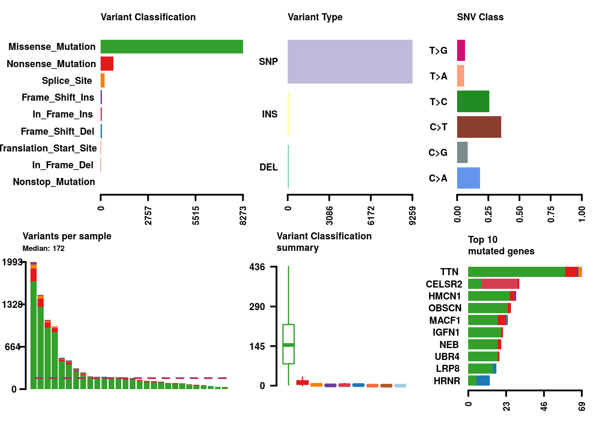
| Version | Author | Date |
|---|---|---|
| 3d8fb5f | melsiddieg | 2018-09-28 |
oncoplot(maf = brn, top = 20)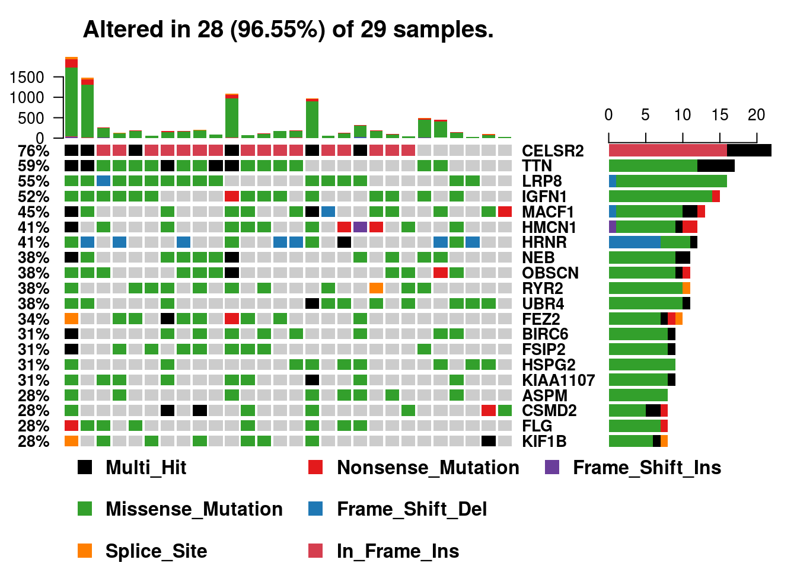
| Version | Author | Date |
|---|---|---|
| 3d8fb5f | melsiddieg | 2018-09-28 |
brn.titv = titv(maf = brn, plot = FALSE, useSyn = TRUE)
plotTiTv(res = brn.titv)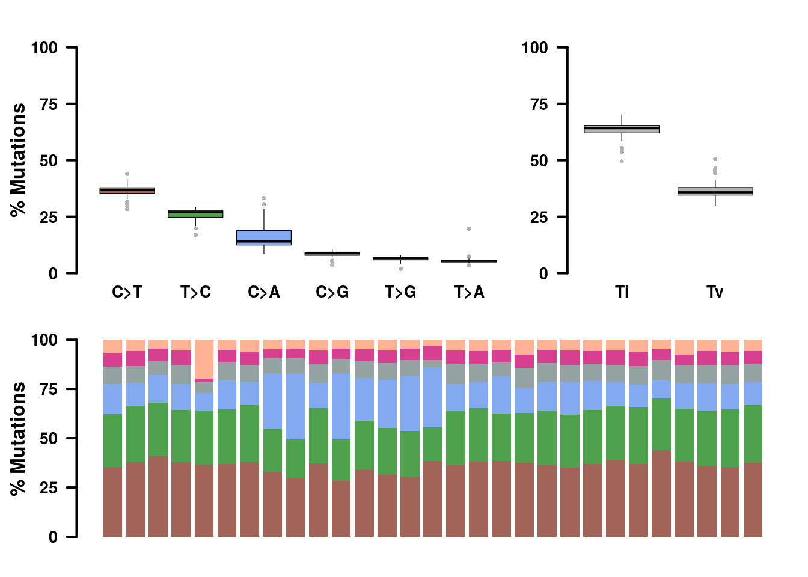
| Version | Author | Date |
|---|---|---|
| 3d8fb5f | melsiddieg | 2018-09-28 |
NULLlollipopPlot(maf = brn, gene = 'IGFN1', AACol = 'HGVSp', showMutationRate = TRUE)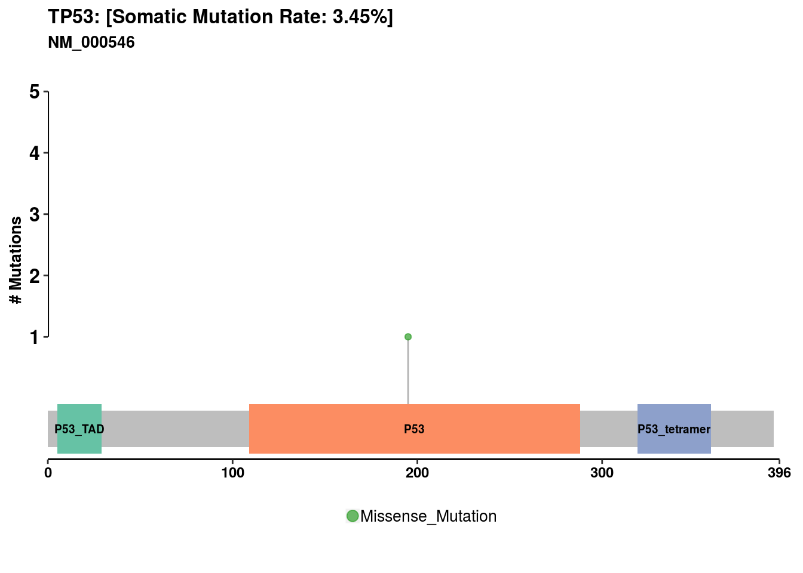
| Version | Author | Date |
|---|---|---|
| 3d8fb5f | melsiddieg | 2018-09-28 |
lollipopPlot(maf = brn, gene = 'MEGF6', AACol = 'HGVSp', showMutationRate = TRUE)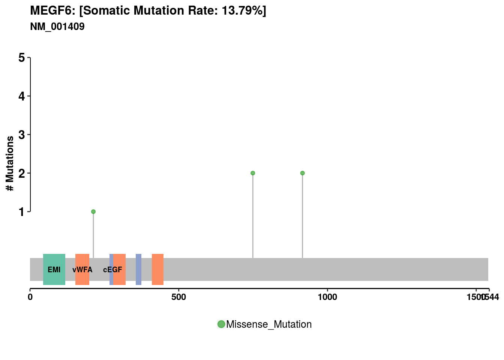
| Version | Author | Date |
|---|---|---|
| 3d8fb5f | melsiddieg | 2018-09-28 |
rainfallPlot(maf = brn, detectChangePoints = TRUE, fontSize = 12, pointSize = 0.6) Chromosome Start_Position End_Position nMuts Avg_intermutation_dist
1: 2 179394854 179638475 82 3007.67
Size C>A C>G C>T T>A T>C T>G Filter
1: 243621 35 3 27 3 11 3 .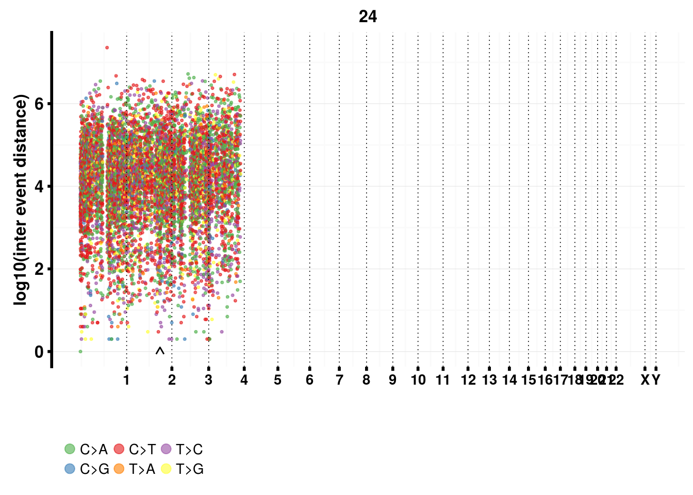
| Version | Author | Date |
|---|---|---|
| 3d8fb5f | melsiddieg | 2018-09-28 |
somaticInteractions(maf = brn, top = 25, pvalue = c(0.05, 0.1))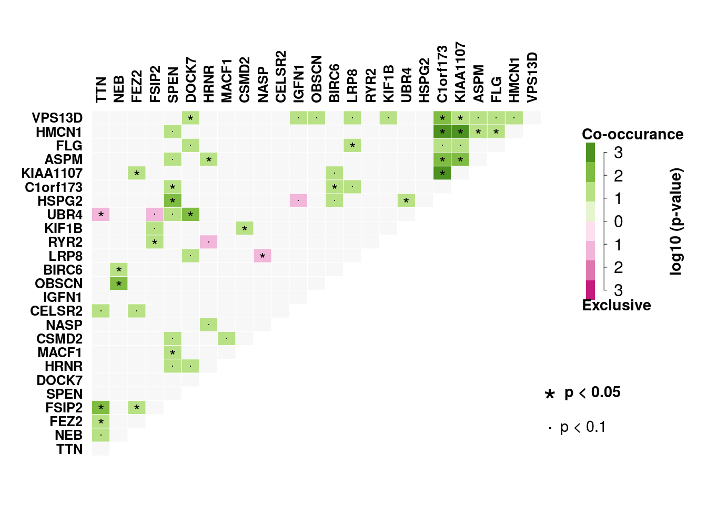
| Version | Author | Date |
|---|---|---|
| 3d8fb5f | melsiddieg | 2018-09-28 |
gene_set pvalue
1: UBR4, NASP, LRP8 0.001908494
2: UBR4, NASP, FSIP2 0.005502130
3: NASP, LRP8, HRNR 0.014583475
4: NASP, RYR2, HRNR 0.034780627
5: UBR4, TTN, HRNR 0.035086282
6: UBR4, NASP, TTN 0.035719158
7: UBR4, HSPG2, TTN 0.048151676$pairs
gene1 gene2 pValue oddsRatio 00 11 01 10
1: C1orf173 KIAA1107 2.306539e-05 Inf 20 7 2 NA
2: C1orf173 HMCN1 5.074386e-04 Inf 17 7 5 NA
3: KIAA1107 HMCN1 8.622063e-04 27.15191000 16 8 4 1
4: HSPG2 SPEN 1.099450e-03 30.99699184 19 6 1 3
5: VPS13D C1orf173 3.207371e-03 20.59860187 20 5 2 2
6: FSIP2 TTN 3.289564e-03 Inf 12 9 8 NA
7: KIAA1107 ASPM 3.888266e-03 15.50522058 18 6 2 3
8: OBSCN NEB 5.060454e-03 11.82225752 15 8 3 3
9: DOCK7 UBR4 5.539538e-03 17.90383449 17 6 5 1
10: C1orf173 ASPM 7.916555e-03 13.70836136 19 5 3 2
11: C1orf173 BIRC6 1.643793e-02 10.04777129 18 5 4 2
12: VPS13D KIAA1107 1.643793e-02 10.04777129 18 5 4 2
13: UBR4 TTN 1.772989e-02 0.11787639 4 3 14 8
14: KIF1B CSMD2 1.876195e-02 8.96961814 18 5 3 3
15: TTN FEZ2 1.908606e-02 11.36810774 11 9 1 8
16: NASP LRP8 2.602032e-02 0.08543342 7 1 15 6
17: SPEN MACF1 2.602032e-02 11.70502193 15 6 7 1
18: FSIP2 FEZ2 3.167777e-02 7.31268601 16 6 4 3
19: KIAA1107 FEZ2 3.167777e-02 7.31268601 16 6 4 3
20: SPEN C1orf173 3.774139e-02 7.63024506 19 4 3 3
21: VPS13D DOCK7 3.774139e-02 7.63024506 19 4 3 3
22: HMCN1 ASPM 3.819372e-02 6.92470430 15 6 2 6
23: HRNR ASPM 3.819372e-02 6.92470430 15 6 2 6
24: HMCN1 FLG 3.819372e-02 6.92470430 15 6 2 6
25: FLG LRP8 4.434449e-02 8.67709557 12 7 9 1
26: NEB BIRC6 4.784091e-02 5.58067343 15 6 3 5
27: RYR2 FSIP2 4.784091e-02 5.58067343 15 6 3 5
28: UBR4 HSPG2 4.784091e-02 5.58067343 15 6 3 5
29: HSPG2 IGFN1 5.017491e-02 0.16493864 7 2 13 7
30: FEZ2 CELSR2 6.252643e-02 Inf 7 10 12 NA
31: RYR2 HRNR 6.410519e-02 0.18896921 8 2 10 9
32: NEB TTN 6.410519e-02 5.29186732 10 9 8 2
33: KIAA1107 FLG 6.670301e-02 6.50545250 17 5 3 4
34: FSIP2 KIF1B 6.670301e-02 6.50545250 17 5 3 4
35: FLG C1orf173 6.756622e-02 5.54819616 18 4 3 4
36: FLG DOCK7 6.756622e-02 5.54819616 18 4 3 4
37: ASPM SPEN 6.756622e-02 5.54819616 18 4 3 4
38: CSMD2 SPEN 6.756622e-02 5.54819616 18 4 3 4
39: ASPM VPS13D 6.756622e-02 5.54819616 18 4 3 4
40: FLG VPS13D 6.756622e-02 5.54819616 18 4 3 4
41: KIF1B VPS13D 6.756622e-02 5.54819616 18 4 3 4
42: VPS13D OBSCN 7.121824e-02 6.17943953 16 5 6 2
43: SPEN UBR4 7.121824e-02 6.17943953 16 5 6 2
44: VPS13D IGFN1 8.007663e-02 8.06970264 13 6 9 1
45: HSPG2 BIRC6 8.798907e-02 4.68218980 16 5 4 4
46: KIAA1107 BIRC6 8.798907e-02 4.68218980 16 5 4 4
47: TTN CELSR2 9.204372e-02 5.02716150 5 15 7 2
48: SPEN HMCN1 9.204372e-02 5.02716150 15 5 7 2
49: VPS13D HMCN1 9.204372e-02 5.02716150 15 5 7 2
50: DOCK7 HRNR 9.204372e-02 5.02716150 15 5 7 2
51: NASP HRNR 9.204372e-02 5.02716150 15 5 7 2
52: SPEN HRNR 9.204372e-02 5.02716150 15 5 7 2
53: CSMD2 MACF1 9.232051e-02 5.61012834 14 6 7 2
54: C1orf173 LRP8 9.272031e-02 6.76147080 12 6 10 1
55: DOCK7 LRP8 9.272031e-02 6.76147080 12 6 10 1
56: VPS13D LRP8 9.272031e-02 6.76147080 12 6 10 1
57: UBR4 FSIP2 9.590260e-02 0.13339238 10 1 8 10
gene1 gene2 pValue oddsRatio 00 11 01 10
Event
1: Co_Occurance
2: Co_Occurance
3: Co_Occurance
4: Co_Occurance
5: Co_Occurance
6: Co_Occurance
7: Co_Occurance
8: Co_Occurance
9: Co_Occurance
10: Co_Occurance
11: Co_Occurance
12: Co_Occurance
13: Mutually_Exclusive
14: Co_Occurance
15: Co_Occurance
16: Mutually_Exclusive
17: Co_Occurance
18: Co_Occurance
19: Co_Occurance
20: Co_Occurance
21: Co_Occurance
22: Co_Occurance
23: Co_Occurance
24: Co_Occurance
25: Co_Occurance
26: Co_Occurance
27: Co_Occurance
28: Co_Occurance
29: Mutually_Exclusive
30: Co_Occurance
31: Mutually_Exclusive
32: Co_Occurance
33: Co_Occurance
34: Co_Occurance
35: Co_Occurance
36: Co_Occurance
37: Co_Occurance
38: Co_Occurance
39: Co_Occurance
40: Co_Occurance
41: Co_Occurance
42: Co_Occurance
43: Co_Occurance
44: Co_Occurance
45: Co_Occurance
46: Co_Occurance
47: Co_Occurance
48: Co_Occurance
49: Co_Occurance
50: Co_Occurance
51: Co_Occurance
52: Co_Occurance
53: Co_Occurance
54: Co_Occurance
55: Co_Occurance
56: Co_Occurance
57: Mutually_Exclusive
Event
$gene_sets
gene_set pvalue
1: UBR4, NASP, LRP8 0.001908494
2: UBR4, NASP, FSIP2 0.005502130
3: NASP, LRP8, HRNR 0.014583475
4: NASP, RYR2, HRNR 0.034780627
5: UBR4, TTN, HRNR 0.035086282
6: UBR4, NASP, TTN 0.035719158
7: UBR4, HSPG2, TTN 0.048151676brn.drivers = oncodrive(maf = brn, AACol = 'HGVSp', minMut = 5, pvalMethod = 'zscore')plotOncodrive(res = brn.drivers, fdrCutOff = 0.1, useFraction = TRUE)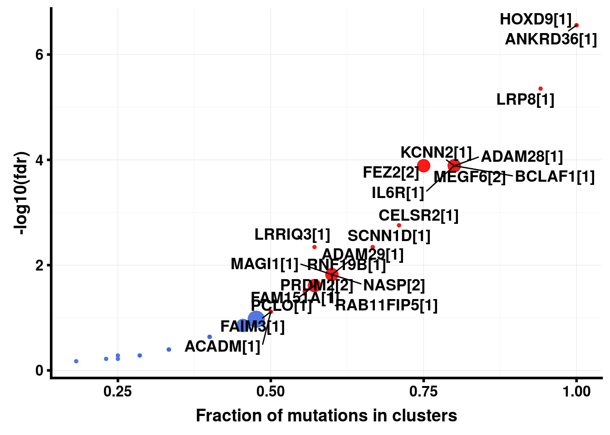
| Version | Author | Date |
|---|---|---|
| 3d8fb5f | melsiddieg | 2018-09-28 |
brn.pfam = pfamDomains(maf = brn, AACol = 'HGVSp', top = 10)Warning in pfamDomains(maf = brn, AACol = "HGVSp", top = 10): NAs
introduced by coercion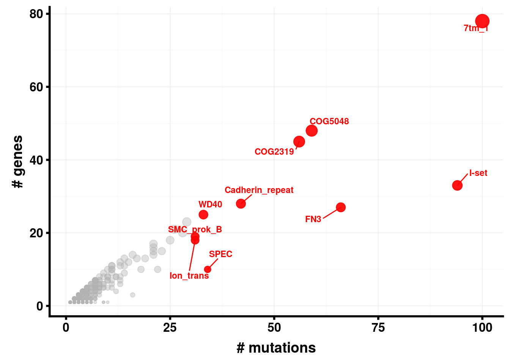
| Version | Author | Date |
|---|---|---|
| 3d8fb5f | melsiddieg | 2018-09-28 |
require('NMF')
brn.sign = extractSignatures(mat = brn.tnm, nTry = 6, plotBestFitRes = FALSE) method seed rng metric rank sparseness.basis sparseness.coef
1: brunet random 1 KL 2 0.3334790 0.5274476
2: brunet random 1 KL 3 0.4009377 0.4369627
3: brunet random 2 KL 4 0.4013122 0.3947774
4: brunet random 3 KL 5 0.3944188 0.4515262
5: brunet random 1 KL 6 0.4021486 0.3827709
rss evar silhouette.coef silhouette.basis residuals niter
1: 1061813.02 0.9347200 1.0000000 1.0000000 3688.5128 470
2: 179331.03 0.9889748 0.9026969 0.8232811 1955.6468 480
3: 97910.42 0.9939805 0.8453045 0.7425779 1080.8709 480
4: 70307.19 0.9956775 0.6838958 0.5295753 929.4269 490
5: 62601.48 0.9961513 0.4684342 0.4485394 829.4023 1180
cpu cpu.all nrun cophenetic dispersion silhouette.consensus
1: 0.136 2.508 10 0.9997104 0.9760285 0.9927203
2: 0.156 2.512 10 0.9987707 0.9589061 0.9500000
3: 0.184 2.336 10 0.9951558 0.9406421 0.8942529
4: 0.160 3.224 10 0.9375319 0.6689655 0.6622095
5: 0.440 2.520 10 0.9497675 0.6773365 0.6510011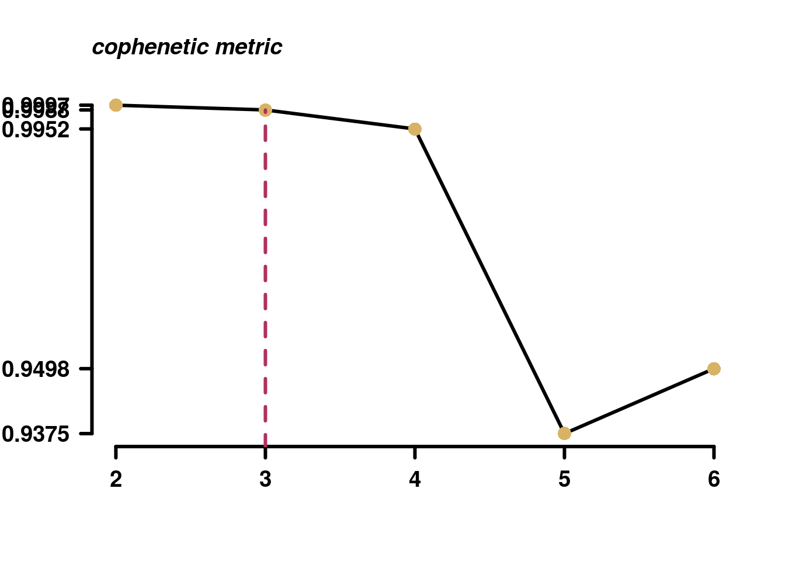
| Version | Author | Date |
|---|---|---|
| 3d8fb5f | melsiddieg | 2018-09-28 |
plotSignatures(brn.sign, title_size = 0.8)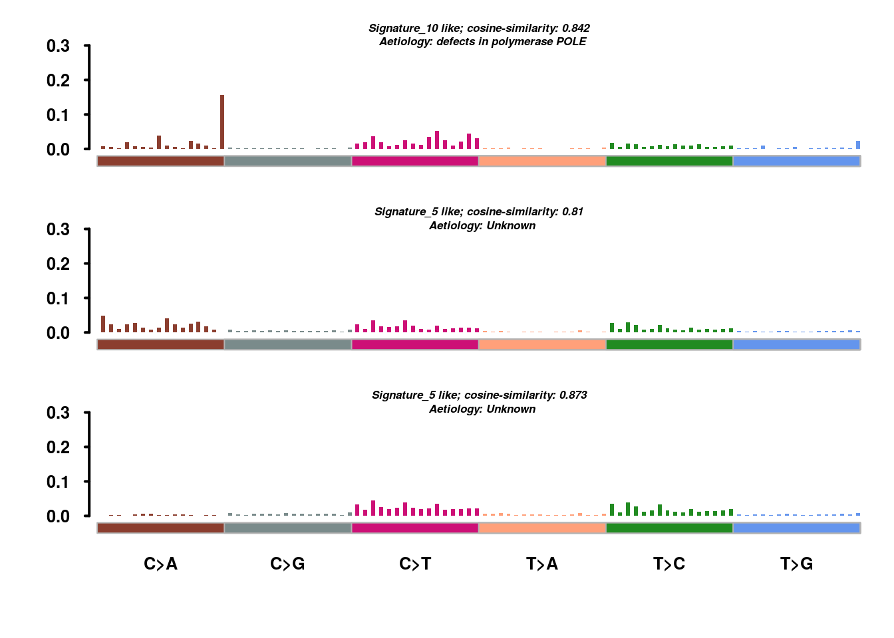
| Version | Author | Date |
|---|---|---|
| 3d8fb5f | melsiddieg | 2018-09-28 |
brn.ce = clinicalEnrichment(maf = brn, clinicalFeature = 'Grade')
I II III IV
2 3 5 16 plotEnrichmentResults(enrich_res = brn.ce, pVal = 0.05)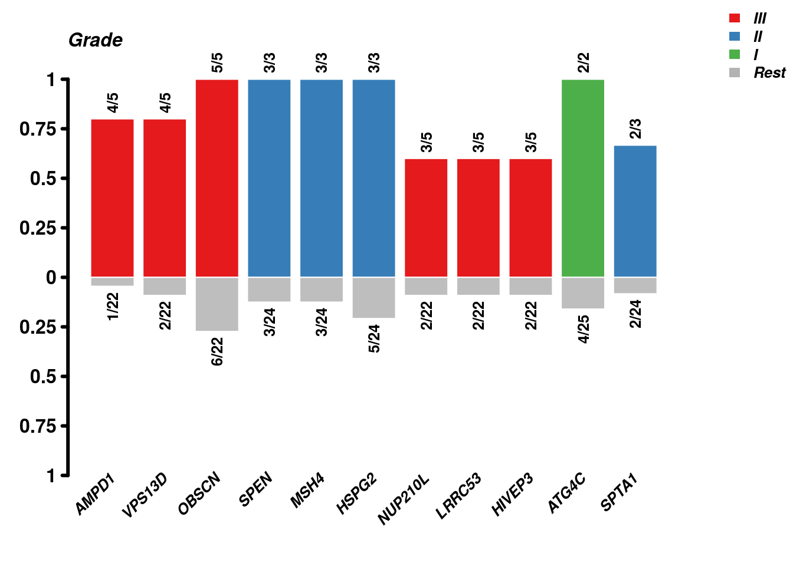
| Version | Author | Date |
|---|---|---|
| 257e6ab | melsiddieg | 2018-10-14 |
sessionInfo()R version 3.5.0 (2018-04-23)
Platform: x86_64-pc-linux-gnu (64-bit)
Running under: Ubuntu 16.04.5 LTS
Matrix products: default
BLAS: /opt/microsoft/ropen/3.5.0/lib64/R/lib/libRblas.so
LAPACK: /opt/microsoft/ropen/3.5.0/lib64/R/lib/libRlapack.so
locale:
[1] LC_CTYPE=en_US.UTF-8 LC_NUMERIC=C
[3] LC_TIME=en_US.UTF-8 LC_COLLATE=en_US.UTF-8
[5] LC_MONETARY=en_US.UTF-8 LC_MESSAGES=en_US.UTF-8
[7] LC_PAPER=en_US.UTF-8 LC_NAME=C
[9] LC_ADDRESS=C LC_TELEPHONE=C
[11] LC_MEASUREMENT=en_US.UTF-8 LC_IDENTIFICATION=C
attached base packages:
[1] parallel stats graphics grDevices utils datasets methods
[8] base
other attached packages:
[1] doParallel_1.0.13 iterators_1.0.10 foreach_1.5.0
[4] NMF_0.21.0 cluster_2.0.7-1 rngtools_1.3.1
[7] pkgmaker_0.27 registry_0.5 data.table_1.11.8
[10] maftools_1.6.07 Biobase_2.40.0 BiocGenerics_0.26.0
loaded via a namespace (and not attached):
[1] bitops_1.0-6 matrixStats_0.54.0
[3] bit64_0.9-7 httr_1.3.1
[5] progress_1.2.0 RColorBrewer_1.1-2
[7] rprojroot_1.3-2 GenomeInfoDb_1.16.0
[9] tools_3.5.0 backports_1.1.2
[11] R6_2.2.2 DBI_1.0.0
[13] lazyeval_0.2.1 colorspace_1.3-2
[15] GetoptLong_0.1.7 withr_2.1.2
[17] gridExtra_2.3 prettyunits_1.0.2
[19] tidyselect_0.2.4 bit_1.1-14
[21] compiler_3.5.0 git2r_0.21.0
[23] DelayedArray_0.6.6 labeling_0.3
[25] slam_0.1-43 rtracklayer_1.40.6
[27] scales_1.0.0 stringr_1.3.1
[29] digest_0.6.17 Rsamtools_1.32.3
[31] rmarkdown_1.9 R.utils_2.6.0
[33] cometExactTest_0.1.5 XVector_0.20.0
[35] pkgconfig_2.0.2 htmltools_0.3.6
[37] changepoint_2.2.2 bibtex_0.4.2
[39] BSgenome_1.48.0 rlang_0.2.2
[41] GlobalOptions_0.1.0 RSQLite_2.1.1
[43] shape_1.4.4 bindr_0.1.1
[45] zoo_1.8-2 mclust_5.4
[47] BiocParallel_1.14.2 dplyr_0.7.6
[49] R.oo_1.22.0 VariantAnnotation_1.26.1
[51] RCurl_1.95-4.11 magrittr_1.5
[53] GenomeInfoDbData_1.1.0 wordcloud_2.5
[55] Matrix_1.2-14 Rcpp_0.12.18
[57] munsell_0.5.0 S4Vectors_0.18.3
[59] R.methodsS3_1.7.1 stringi_1.2.4
[61] whisker_0.3-2 yaml_2.1.19
[63] SummarizedExperiment_1.10.1 zlibbioc_1.26.0
[65] plyr_1.8.4 grid_3.5.0
[67] blob_1.1.1 ggrepel_0.8.0
[69] crayon_1.3.4 lattice_0.20-35
[71] cowplot_0.9.3 Biostrings_2.48.0
[73] splines_3.5.0 GenomicFeatures_1.32.2
[75] hms_0.4.2 circlize_0.4.4
[77] knitr_1.20 ComplexHeatmap_1.18.0
[79] pillar_1.3.0 GenomicRanges_1.32.6
[81] rjson_0.2.20 biomaRt_2.36.1
[83] reshape2_1.4.3 codetools_0.2-15
[85] stats4_3.5.0 XML_3.98-1.16
[87] glue_1.3.0 evaluate_0.10.1
[89] gtable_0.2.0 purrr_0.2.5
[91] assertthat_0.2.0 ggplot2_3.0.0
[93] gridBase_0.4-7 xtable_1.8-3
[95] survival_2.41-3 tibble_1.4.2
[97] GenomicAlignments_1.16.0 AnnotationDbi_1.42.1
[99] memoise_1.1.0 IRanges_2.14.11
[101] workflowr_1.0.1 bindrcpp_0.2.2 This reproducible R Markdown analysis was created with workflowr 1.0.1